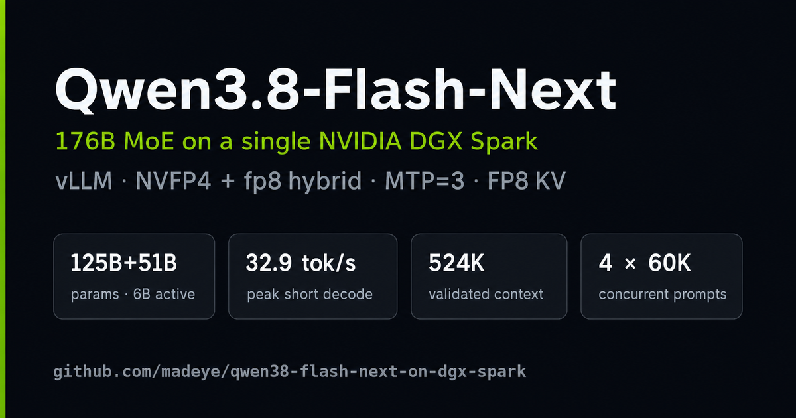

Qwen3.8-Flash-Next on a single DGX Spark
176B-parameter MoE · 6B active · vLLM · NVFP4 + fp8 hybrid · MTP speculative decoding
Field notes from serving Qwen3.8-Flash-Next NVFP4 on one NVIDIA DGX Spark (GB10, 128 GB unified memory) with the qwen3.8-Flash-DGX recipe.

Measured (single request, greedy)
| Metric | NVFP4 | Hybrid (+fp8 side layers) |
|---|---|---|
| Prefill, cold 10.7k prompt | 1,042 tok/s | 916 tok/s |
| Prefix-cache hit TTFT | 1.48 s | 1.50 s |
| Decode, 400-token answer | 19.1 tok/s | 21.6 tok/s (+13%) |
| Deterministic at T=0 | yes | yes |
How it fits in 128 GB
The 122 GiB checkpoint holds a 44 GiB n-gram embedding table that each token only
reads 16 rows of. The patched vLLM image serves it from NVMe via mmap,
so resident weights drop to ~76 GiB and the rest of the unified pool is KV cache.
Serving config
scripts/serve.sh # MODE=nvfp4 | MODE=hybrid
# MTP=2 · prefix caching · exact top-k · 262,144-token context · 8 seqsServing it to other machines
scripts/serve.sh publishes an unauthenticated API on all interfaces.
scripts/serve-public.sh pins vLLM to loopback and fronts it with a small
gateway: bearer auth on /v1/* and /metrics, 404 on everything
else, streaming passed through untouched. Keys live in the gateway, so rotating one
takes effect on the next request instead of restarting a container that loads
~76 GiB of weights.
scripts/serve-public.sh # container on 127.0.0.1:18300, gateway on 0.0.0.0:8080The admin dashboard it serves at / shows upstream health and the served
model, edits the advertised API base URL, and creates, reveals, rotates and revokes keys
with per-key request counts.
Full write-up — setup, benchmarks, and memory-reduction options — is in the repository README.
View on GitHub